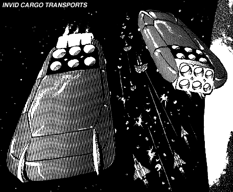

The following material is from
THE THIRD INVID
WAR, a fan supplement by
Dave Deitrich and
Chris
Meadows. Please feel free to use, copy, and distribute
it as you see fit. All we ask is that you give proper credit to us and do not
claim that it is your own work. Comments and suggestions are welcome.
THE INVID CARGO TRANSPORT

BACKGROUND
The Invid Cargo Transport is a new Invid starship designed to transport
harvested flowers and protoculture from Earth to the Regis' new base of
operations in an undisclosed system. Stylistically, it somewhat
resembles the Invid Troop Carrier ("Clam Ship"). However, there are a
number of differences. The basic shape of the Cargo Transport is a
large flat oval with rounded edges. Six large thrusters and six
antigravity domes are located on the back of one of the short edges, and
look very similar to those of the Troop Transport. Unlike the Troop
Transport, the Cargo Transport can NOT open up like a clam. This is not
a design flaw; the Cargo Transport was never intended to carry troops or
engage in combat.
The Cargo Transport is large and mostly hollow inside. The only
compartmentalized area on the ship is near the rear, where the bridge
and engines are located. The interior of the front of the ship is
largely filled with frameworks and scaffolding, which hold hundreds of
large containers, all carrying Protoculture or the Flower of Life.
Any mecha larger than an Invid Trooper (16.6 ft high by 13 ft
wide) will have a lot of trouble moving around inside the Transport.
This includes all forms of Veritechs and Destroids. Anything smaller
than a Trooper (e.g. a Cyclone) will have no problem hiding among all
the containers, provided that their protoculture emissions don't give
them away.
SCHEMATICS
 Click on the icon to the left to view the schematics of the Cargo Transport,
based on data collected by REF Intelligence.
Click on the icon to the left to view the schematics of the Cargo Transport,
based on data collected by REF Intelligence.
RPG STATS
REF Nickname: "Egg Ship"
Vehicle Type: Cargo Transport.
Crew: 4 Invid Enforcers (1 pilot plus 3 backups),
12 Invid Sentinels, 4
Invid Troopers (workers), 4 Invid Retrieval Drones. ( Note: only one
pilot is needed to fly the spacecraft. All the other Invid are
either Guards, Workers, or Backups.)
M.D.C. BY LOCATION
Maneuvering Jets (24 small) 100 each
Maneuvering Jets (6 large; bottom) 200 each
* Main Thrusters (6 rear) 500 each
** Antigravity Domes (6) 300 each
*** Power Core/Fold System 300
Outer Walls (per 40 ft area) 80
Interior Walls (per 20 ft area; rear only) 40
Interior Scaffolding (per 20 ft area; front only) 5
**** Cargo Section (front 2/3 of craft) 3000
***** Engineering Section (rear 1/3 of craft) 2000
Note: No reinforced pilot's compartment.
- *
- Each Antigravity Dome destroyed will reduce speed by 5%.
Destruction of all AG Domes will restrict the transport to forward
motion only.
- **
- Each main thruster destroyed will reduce speed by 10%.
- ***
- Depleting the MDC of the power core will instantly cause an
explosion that will totally destroy the spacecraft, along with
anything and everything in it.
- ****
- Depleting the MDC of the cargo section will fatally wound the
spacecraft. In an atmosphere, the ship will collapse in on itself
like a punctured blimp, and in outer space the hull will simply
burst apart at the seams. The entire craft will explode in 1D6
melee rounds.
- *****
- Depleting the MDC of the engineering section will instantly cause
an explosion that will totally destroy the spacecraft, along with
anything and everything in it.
SPECIFICATIONS
- Flight Speed:
- Stationary hover to Mach 5. Has full transatmospheric
capabilities. Cruising speed is about Mach 1.
- Space Fold:
- A hyperspace system that catapults the vessel through space
and time. The space fold system is used for traveling from
one system to another quickly. Range: Unknown, presumably
limitless. Note : When a Cargo Transport makes a space
fold, it will also transport all vessels within one mile.
- Height:
- 150 ft (45 m)
- Width:
- 600 ft (180 m)
- Length:
- 1200 ft (360 m)
- Weight:
- 180 tons unloaded.
- Cargo:
- Up to 2000 tons fully loaded.
WEAPON SYSTEMS
NONE. However, Cargo Transports are usually escorted by 2-4 fully
loaded Invid Troop Carriers. These carriers will actually accompany the
Cargo Transport on its voyage to New Optera and back. Cargo Transports
will never stray too far out of the range of the
Invid Space Hives' main
cannons, for fear of attack from REF starships.
This document was originally converted to HTML by
Joshua Megerman
megermjs@newton.physics.drexel.edu
st92bb10@post.drexel.edu